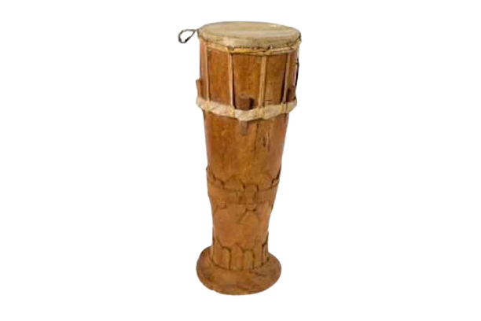

Sulawesi Tengah

Ini adalah Ganda, terlihat Ganda mirip seperti gendang. Cara memainkannya juga sama yaitu dipukul. Meskipun terlihat mirip dengan gendang, ganda memiliki ukuran yang lebih kecil. Ganda terbuat dari kayu yang berbentuk seperti selongsong dengan dua ujung berlubang yang ditutupi oleh kulit binatang.